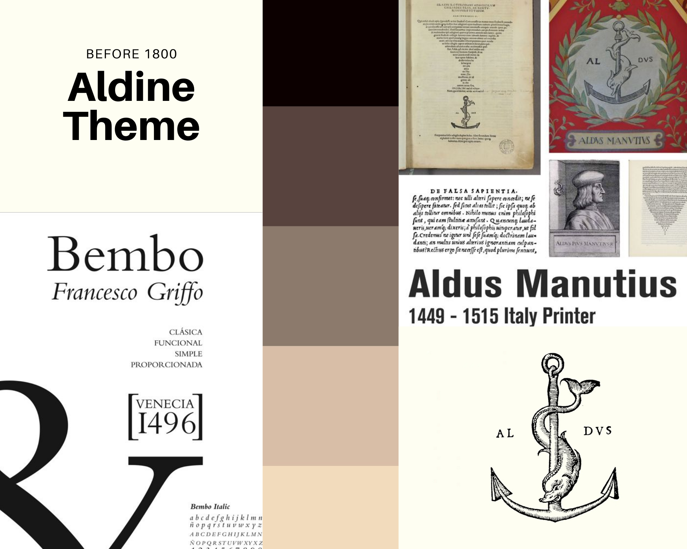

Aldo Manutius was a Venetian scholar, who became a publisher and printer when he founded the Aldine Press in 1495. His typefaces were all designed and cut by the brilliant Francesco Griffo, a punchcutter who created the first Roman type cut from study of classical Roman capitals.
The reference for our style is a typical edition by Aldine Press. The introduction of pocket editions was an extraordinary benchmark in the press history, together with the creation of roman types which are still very common in nowadays magazines and publications.
The "Aldine" typeface was recreated by Monotype in 1929. In 1990, the Monotype staff digitized 24 weights of Francesco Griffo's Bembo family, which was originally created in 1496.
We chose an ancient paper image for the background and we decided to use an ornamental capital letter for the title initial. The font we chose is ‘Aldine 721’, one of the many fonts inspired by Aldine press, they all are part of the bigger Roman family (e.g. Times New Roman). The font style is classical and old fashioned.
The title font is more decorative and inspired by medieval fashion. Indeed, during the Middle Ages, copists used to decorate manuscripts by drawing miniatures. This trend remained in vogue even with the press advent in the XVI century.
